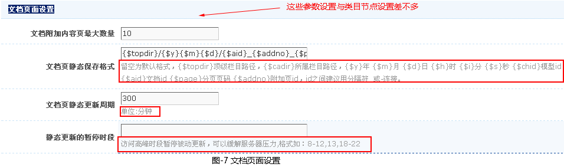
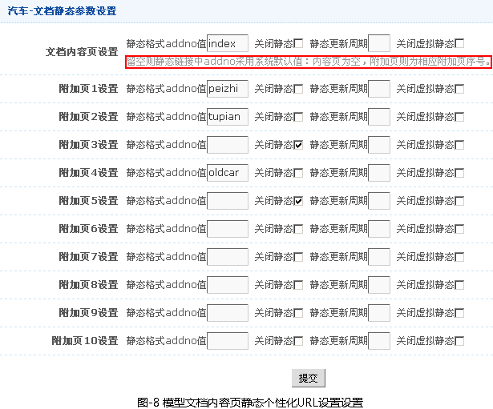
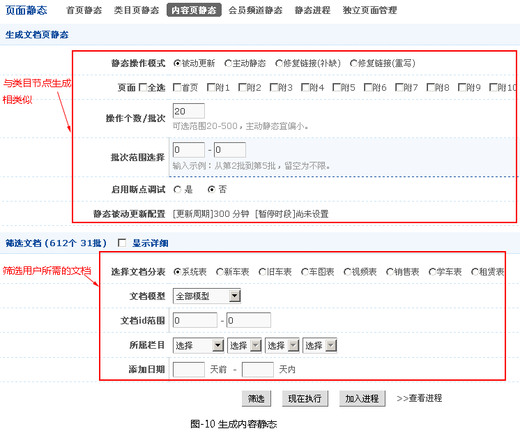

一、文档页面静态设置
-
文档页面静态页：即设置内容页面的URL格式
文档页面静态的设置，有三种方法：
第一种：系统默认的文档页面静态（1.1），在〖系统设置〗->〖网站参数〗->〖页面设置〗->文档页面设置中设置；
第二种：文档模型基本设置的文档静态参数设置（1.2），在〖网站架构〗->〖文档模型〗->〖文档模型管理〗->选择具体模型->〖详情〗中设置；
第三种：栏目管理的静态配置（1.3），在〖网站架构〗->〖类目管理〗->〖栏目管理〗->选择具体栏目->〖详情〗中设置。
这三种方法存在优选权：
[栏目管理的静态配置]优先于[文档模型基本设置的文档静态参数设置]优先于[系统默认的文档页面静态]
- 1.1 系统默认的文档页面静态(如图-7)
-
在〖系统设置〗->〖网站参数〗->〖页面设置〗->文档页面设置中设置

静态保存格式的设置方法：
留空为默认格式，{$topdir}顶级栏目目录，{$cadir}所属栏目目录，{$y}年 {$m}月 {$d}日 {$h}时 {$i}分 {$s}秒 {$chid}模型id {$aid}文档id ，{$page}分页页码 {$addno}附加页id，id之间建议用分隔符_或-连接。
说明:
① {$topdir}必须，
② {$aid}_{$addno}_{$page}.html 可以自由组合但必须保证不同的文档URL为不同原则，此项为必填
③ 其它可跟据您所需要填选。
④ 尽可能不要设成URL的路径的文件夹下保存大量数据，这样会影响网站性能。
- 1.2 文档模型基本设置的文档静态参数设置(如图-8)
-
〖网站架构〗->〖文档模型〗->〖文档模型管理〗->选择具体模型->〖详情〗

- 1.3 栏目管理的静态配置(如图-9)
-
〖网站架构〗->〖类目管理〗->〖栏目管理〗->选择具体栏目->〖详情〗
二、生成内容静态
- 在设置好类目页静态参数时，就可以进行首页静态的生成（〖其他管理〗->〖页面静态〗->〖内容静态〗），如图-10所示。

a.〖被动生成静态〗是当用户点击前台页面时，系统自动生成一个该访问静态页面（第一次是动态的，当第二次再点击这个页面时就是静态页面了，以后就会按规则设定的时间自动对已有的静态进行更新;），在网站正常运营期建议使用此设置，系统会自动生成静态页，避免大批量生成静态页面时对服务器资源的消耗。
b.〖主动生成静态〗是管理员主动直接生成前台静态页面; 当网站建设完成，开始正常运营前建议使用一次。一般情况下不建议使用此操作。
c.〖修复静态链接(补缺)〗给[被动生成静态] 生成静态预设静态规则的静态地址，对已生成的静态地址将不在生成，防止以下情况前台生成静态时会出现页面不存在现象。
① 在未启动静态时添加的文章，之后再启动静态。
②静态文件被手动删除。
d.〖修复静态链接(重写) 〗：强制生成所有的预设静态规则的静态地址。
e.〖加入进程〗：与"立即执行"是静态操作的两种模式，通过加入进程并启动进程，利于长时间的无人值守操作。